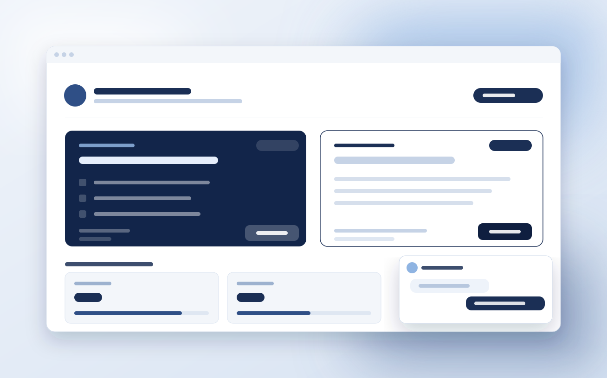
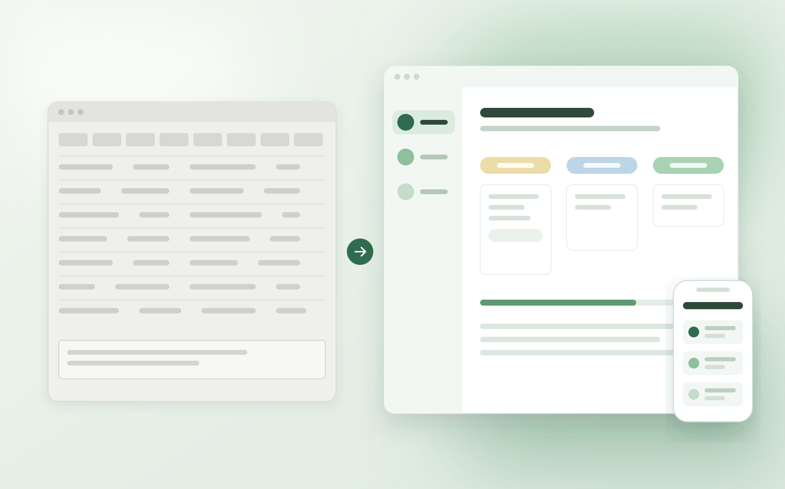

I'm a Product Designer focused on complex products and research. I care about understanding the problem deeply, working closely with the people who use and build the product, and turning that understanding into better decisions.
Selected work

Designing an AI learning experience for psychology students
From an off-target first version to a pilot in two institutions, in six weeks.

Evolving GPA through research with students, professors, and coordinators
The research showed where the new experience still broke in real use, and changed the product's priority.